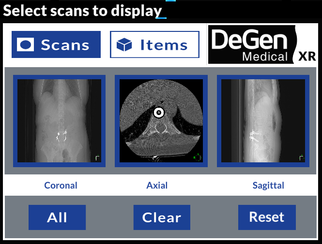

Github ссылка: https://github.com/Aritanos/degen-medical"
Платформа: XR (Hololens 2).
Количество разработчиков: 2.
Проект Degen был разработан для медицинских работников для просмотра изображений Компьютерной Томографии.
Программа загружает список изображений из ассетов и группирует их в зависимости от типа проекции.
Помимо обычного просмотра, прорабатывалась реализация просмотра изображений в MIP, MINIP и Average фильтрах
(методы группировки нескольких изображений для выделения тканей разной плотности).
Screens:
